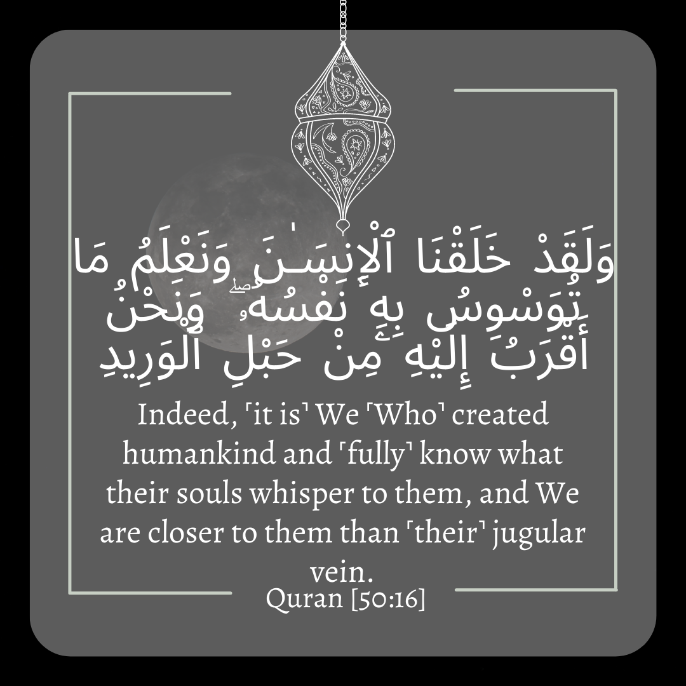
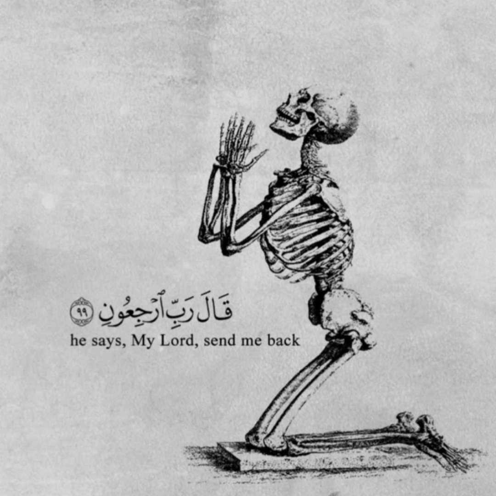
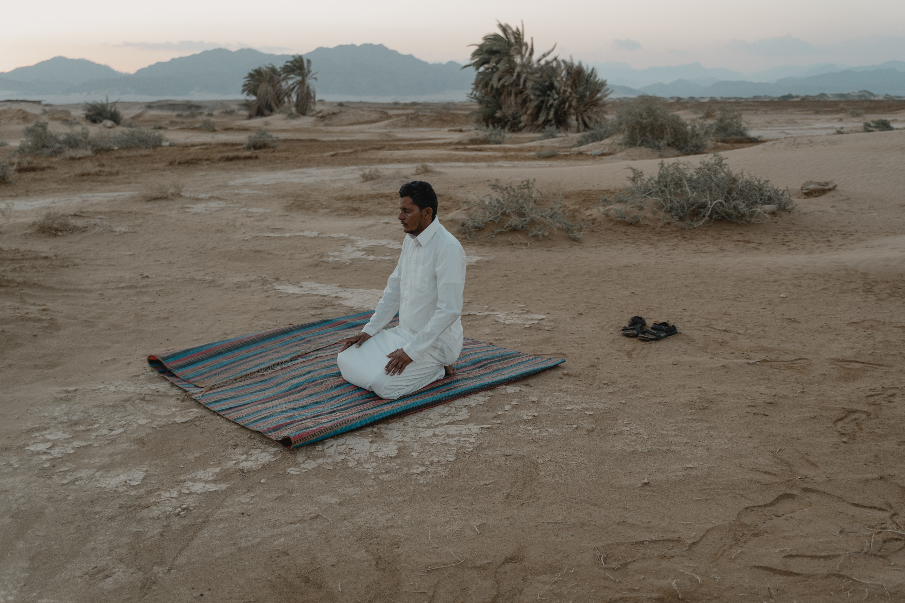
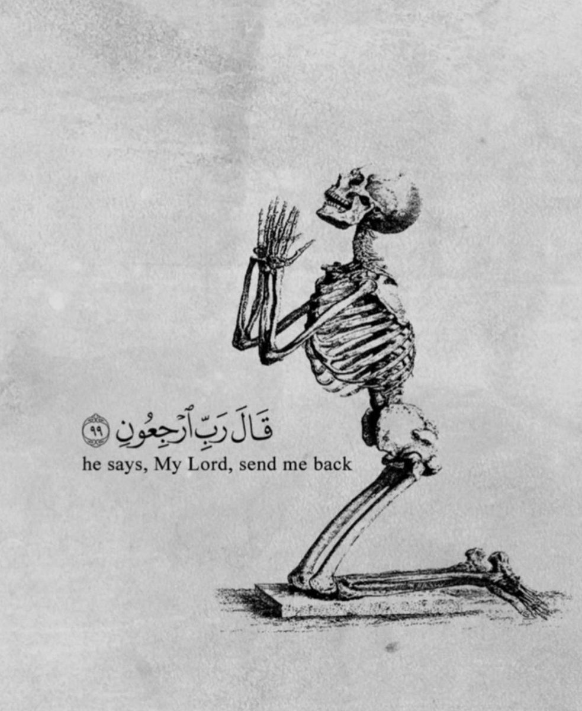

In loving memory of Omar Al-Khalidi. One thing that is universally agreed to benefit the dead is
to pray for them, appealing to God to forgive them and bestow His mercy on them. The evidence for this is
the Qur’anic verse that says: “Those who come after them say: ‘Our Lord! Forgive us our sins, as well as
those of our brethren who preceded us in faith, and let not our hearts entertain any unworthy thoughts or
feelings against any believers. Our Lord! You are truly compassionate, merciful.” (59: 10)
Please Recite Al-Fatihah for the following names:
(Name Requests will be taken via Email in the top right corner)
Ahmad Abdo
Mohammed Ali Abdo
Sarah Alhawash
Abdallah Assi
Khalid Abu Al-Asal
Adel Abed Jaber
Omar Al-Khalidi
Mariam Badwan
Mohammed Badwan
Fadi Cheaito
Hassan Cheaito
Rania El Sarji
Nader Ghadban
Zeinab Fakih
Rasha Khaled Issa
Hameed Taghelabet
Saada Al-Zahabi
Names Here
Popular Picks
Feeling Alone

Feeling Anxious
Feeling Sad
Feeling Grieved
Feeling Stressed
Feeling Thankful
Developer Picks

Turn To Allah
Mentions of Other Religions
Islamic Lectures
Importance of Deen
Ayatul Kursi
00 : 00
00 : 00
Verse Analysis:
English Translation:
Feeling Alone Playlist
Ayatul Kursi
The Omniscience of Allah
The Universal Guidance of the Quran
Seeking Divine Help in Times of Adversity
Allah's Constant Presence
The Futility of Opposing Allah's Chosen Ones
Feeling Anxious Playlist
Allah is the Best Protector
A Verse on the Intimate Relationship Between God and Humankind
Allah is the Best of Planners
Hearts find comfort in the Remembrance of Allah
Feeling Sad Playlist
Steadfastness in Adversity
Seeking Comfort in Patience and Prayer
Trusting in Allah's Providence
Seeking Forgiveness and Mercy
Finding Hope in Compassion
Feeling Grieved Playlist

The Omnipotence and Omniscience of Allah
Patience in Times of Trial
Fearless and Griefless Believers
Not Tormenting Oneself with Grief Over Unbelievers
Feeling Stressed Playlist
Finding comfort through patience and prayer
The straight path: Surah Al-Fatihah
The repentance of Prophet Yunus (A.S)
Trusting in Allah's plan
Feeling Thankful Playlist
Gratitude for Allah's Forgiveness and Mercy
Blessings for the Grateful
Gratitude and Steadfast Faith
Seeking Help through Thankfulness
Gratitude for Divine Wisdom
Appreciation of Grateful Believers
Turn Back To Allah Playlist

Surah Maryam [19:88-92]
Surah Al-Haqqah [69:27-32]
Allah is Al-Qadeer – (All-Powerful).
The Capacity of Hell on the Day of Judgment
The Consequences of Ignoring God's Reminders in the Quran
Mentions Of Other Religions Playlist
Allah's Generosity and Condemnation of False Beliefs
Victory to the Believers
The Essence of Jesus (A.S)
Blessings for the Righteous
Guidance and Light
Islamic Lectures Playlist
Ayatul Kursi
Islamic Lectures Playlist
Allah's Generosity and Condemnation of False Beliefs